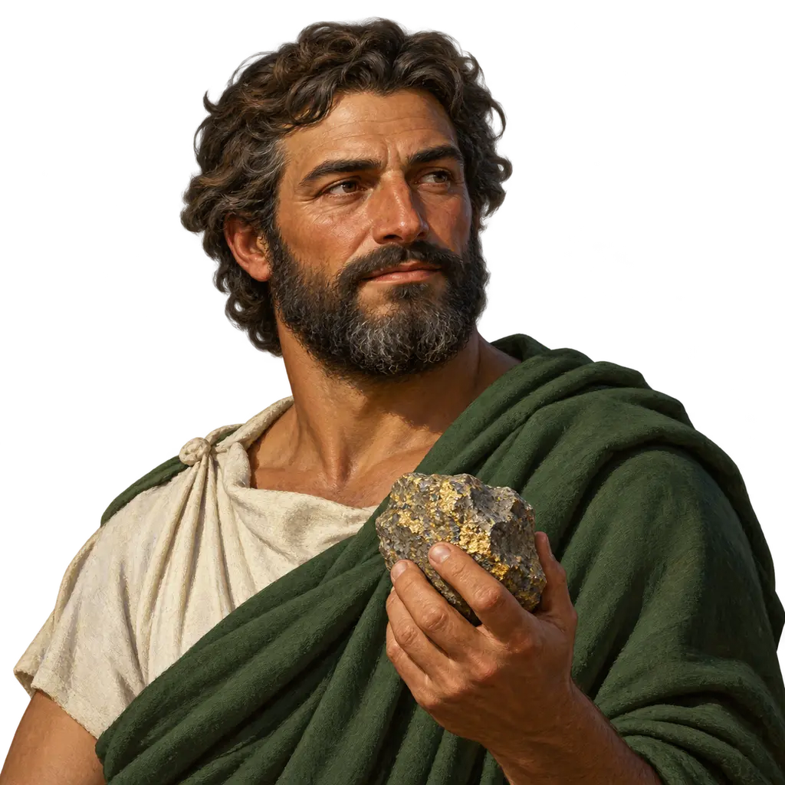
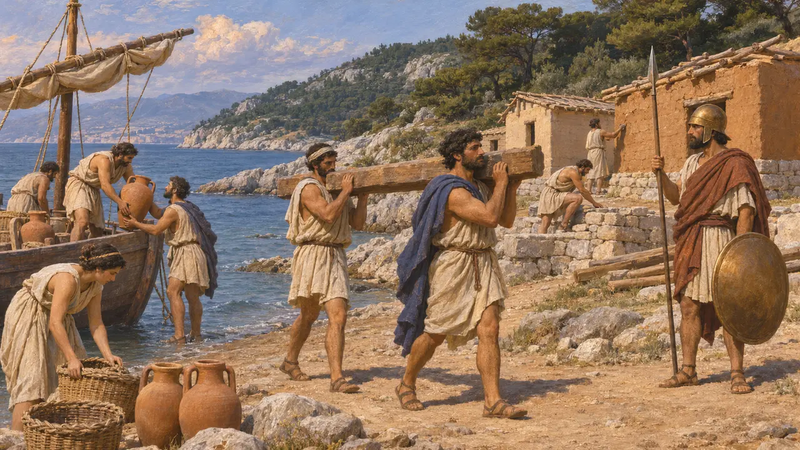
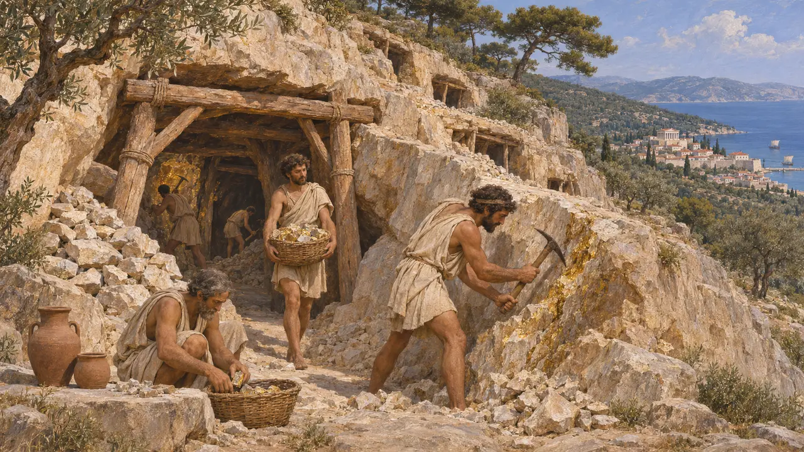
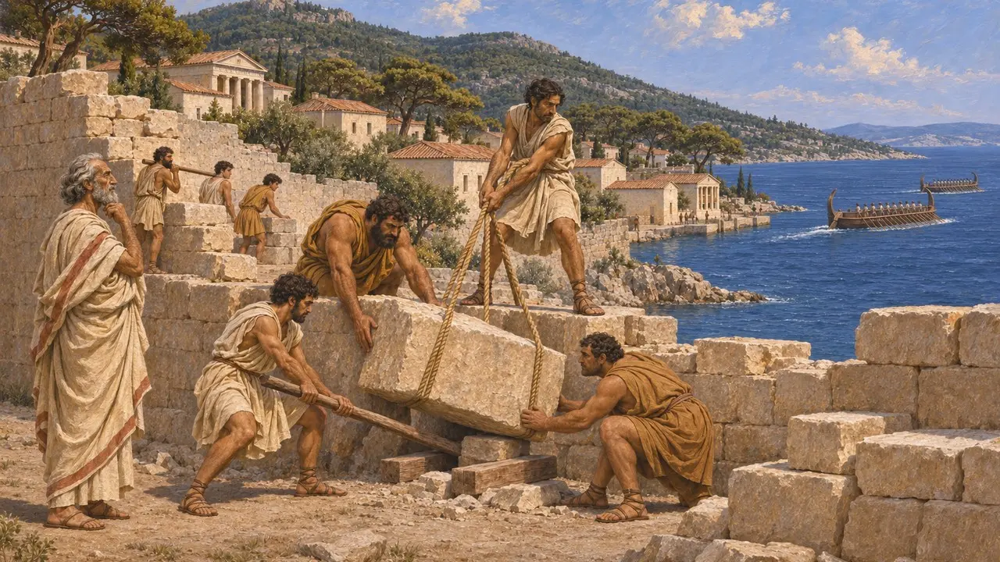
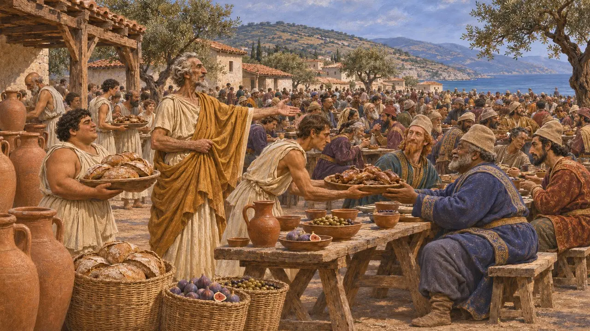
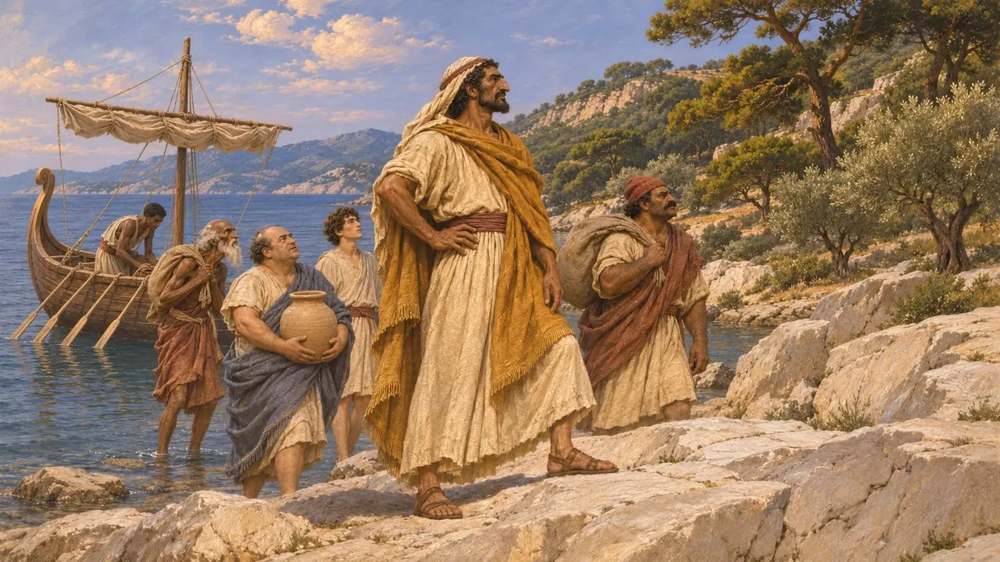
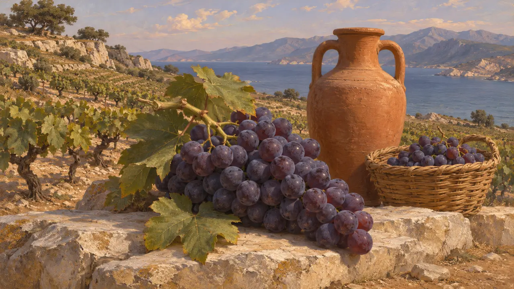

タソス人はパロス島から来たギリシア人植民者で、タソス島と対岸のトラキア沿岸の一帯を領していた。島と本土の鉱山から産する金によって、軍船や城壁を築けるほど富裕となった。紀元前492年以降はペルシア王の臣民となり、紀元前480年にはギリシアへ進軍するクセルクセスの軍に食料を供した。
ゲームでは： 本作ではタソスを、金鉱ゆえに重んじられる交易相手として描いている。金鉱は史実だが、紀元前492年以降のタソスはペルシアの命令に従う従属都市であって対等な相手ではなく、本作はこの点を簡略化している。

パロスの植民市
古代の記述トゥキュディデスはタソスをパロス人の植民市と呼んでいる。入植はおそらく紀元前7世紀前半のことである。これに加わったパロスの詩人アルキロコスは、この植民市とトラキア人との戦いについて詩を残した。やがて入植者たちは、島の対岸の本土にある沿岸の町や交易拠点を支配下に収めていった。
Thucydides 4.104; Archilochus, fragments

島とトラキアの金
古代の記述ヘロドトスは、タソスの鉱山を自ら見たと述べ、なかでも最も驚くべきものはフェニキア人が開いたものだとしている。彼の伝えるところでは、島内およびスカプテ・ヒュレなど本土の鉱山から得られる町の収入は、通常年に200タラントン、多い年で300タラントンであった。これはヘロドトスの数字である。タソスの発掘では古代の採掘跡と、豪華な公共建築を備えた整然とした町が見つかっている。
Herodotus 6.46-47

ペルシアの命を受けて
古代の記述ヘロドトスによれば、ミレトスのヒスティアイオスはイオニアの反乱ののちタソスを包囲した。しかしフェニキア艦隊がミレトスからイオニアの残りの地へ向けて出航したと聞き、包囲を解いて去った。タソス人はその後、富を軍船の建造と城壁の強化に費やした。紀元前492年、彼らは戦わずしてマルドニオスに降った。紀元前491年、近隣の者たちがタソス人に反乱の企てありと訴えたため、ダレイオスは城壁を取り壊し、船をアブデラへ送るよう命じた。彼らはこれに従った。
Herodotus 6.28; 6.44; 6.46-48

王の軍を養う
古代の記述紀元前480年にクセルクセスがトラキアを進軍したとき、タソス人は本土の町々に代わって軍をもてなした。ヘロドトスによれば、オルゲウスの子である市民アンティパトロスは、このただ一度の食事のために銀400タラントンを費やしたという。紀元前479年以降、タソスはアテナイの同盟に加わった。紀元前465年、本土の交易拠点と鉱山をめぐって離反し、2年以上の包囲の末に降伏した。
Herodotus 7.118; Thucydides 1.100-101

フェニキア人タソス
後世の伝説ギリシアの伝承によれば、エウロペを探していたフェニキア人がタソスという名の指導者のもとで初めてこの島に住みつき、島にその名を与えたという。ヘロドトスもこの話を伝え、自ら島で訪れたヘラクレスの神殿と結びつけている。発掘ではフェニキア人の集落は確認されておらず、多くの歴史家はこの話を建国伝説とみなしている。
Herodotus 2.44; 6.47

名前の横の紋章
係争中本作のタソスの紋章は、島の名高いぶどう酒にちなむぶどうの房である。この時代の島の貨幣には、ニンフをさらうサテュロスが描かれている。ぶどうは、この島が知られる交易にちなんで本作が選んだものである。
Head, Historia Numorum, Thrace
出典
- Herodotus, Histories 2.44, 6.28, 6.44-48, 7.118
- Thucydides 1.100-101; 4.104
- Archilochus, fragments
- Y. Grandjean and F. Salviat, Guide de Thasos, 2000
- P. Briant, From Cyrus to Alexander, 2002